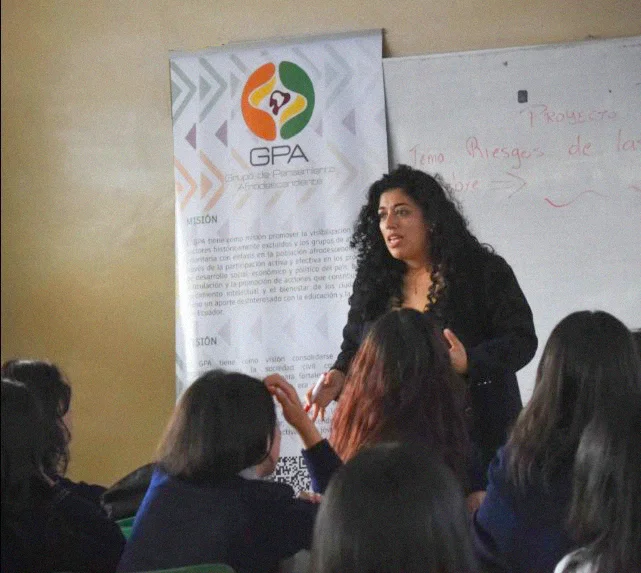
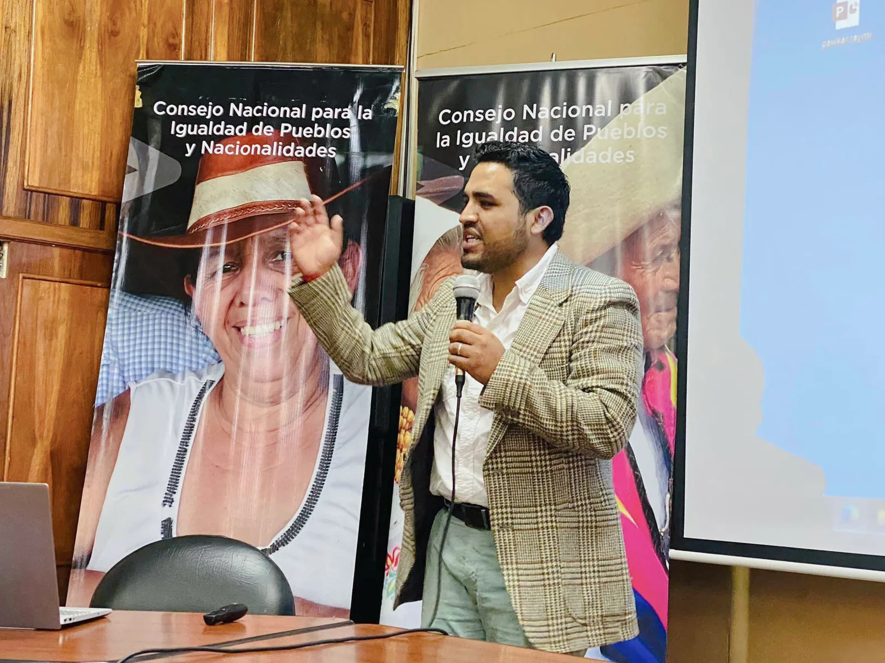
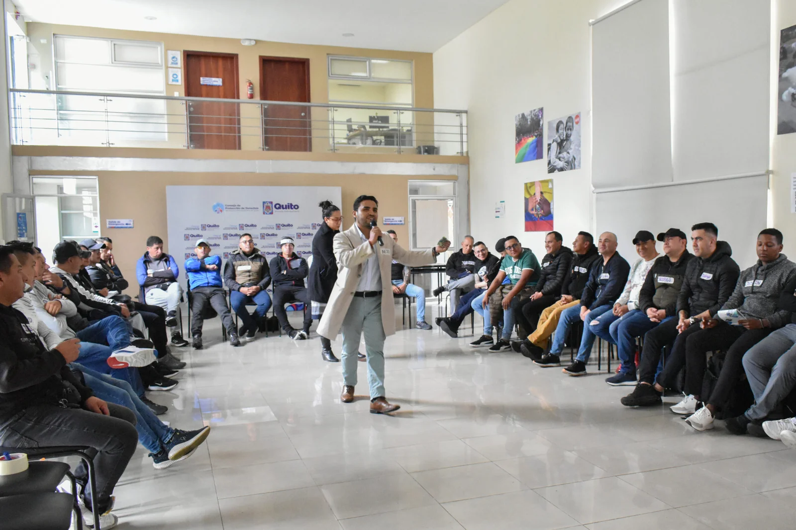
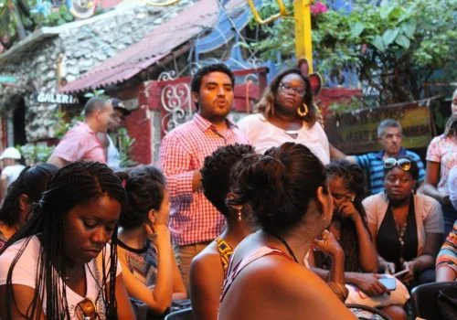
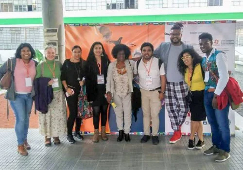
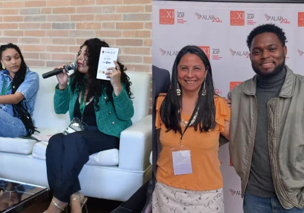

Noticia
El GPA surgió en el marco del Decenio Internacional de los Afrodescendientes (2015-2024) de la ONU, ante la necesidad de un espacio inclusivo y crítico para la población afrodescendiente en Ecuador. Tras desvincularse del Consejo de Participación Ciudadana y Control Social (CPCCS), el GPA se consolidó como una organización independiente, obteniendo su personería jurídica el 20 de octubre de 2018.

Galería






